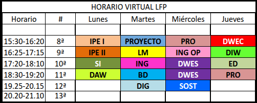
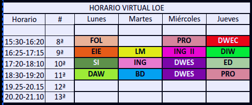

Ciclo de grado superior en modalidad virtual
Estamos aquí para ayudarte.
No dudes en contactar con nosotros ante cualquier duda.
En distancia no hablaremos de primero y segundo
Programación modular (de 1300 horas, incluso 100 más si van a titular.)
Existen relaciones de contenidos de módulos
Estar cursando el módulo de Programación
Haber cursado Sistemas informáticos
Haber cursado Lenguajes de Marcas
Haber cursado Programación Haber cursado Entornos de desarrollo Haber cursado Bases de Datos
|  |  |
🧑🏫 📚
Proyecto Intermodular
Las FOE (LFP) / FCT (LOE en extinción) es un módulo más.
Son prácticas que se hacen en la empresa.
No son remuneradas.
Son un módulo más del ciclo
Su duración es de 370 horas como FCT.
Su duración es de 500 horas como FOE.
Sólo se pueden hacer una vez superado todos los módulos excepto el del proyecto.
Es decir, tener todos los RA no dualizados superados.
Su periodo normal en nuestra modalidad es de septiembre a diciembre en el tercer año.
Se puede solicitar la exención cumpliendo los requisitos establecidos. (vemos a continuación)
Posibilidad de realizarlas con programa ERASMUS(total o parcial) .
Cumplir los siguientes requisitos:
Haber trabajado un año, realizando tareas relacionadas directamente con el contenido del ciclo.
Hay que aportar la siguiente documentación :
La concesión se realiza en el centro (Jefatura-Departamento), puede ser parcial,(con todos los requisitos).
EL módulo de proyecto de LOE tiene las siguientes convocatorias:
Si estás matriculado, pero no cumples condiciones, no corre convocatoria y no hay que renunciar
Es un proceso oficial mediante el cual una persona puede acreditar oficialmente la experiencia laboral y la formación no formal que posee, aunque no tenga un título académico reglado.
Certificados de profesionalidad (parciales o completos).
Convalidación de módulos de Formación Profesional..
Posibilidad de seguir estudiando FP con unidades ya reconocidas..
Para Estándares de Competencia de NIVEL 2 y NIVEL 3:
Tener 20 años cumplidos en el momento de realizar la inscripción.
Nacionalidad española o permiso de residencia o trabajo.
Para acceder por experiencia profesional, será necesario justificar, al menos 3 años, con un mínimo de 2000 horas trabajadas en total, en los últimos 15 años transcurridos antes de presentar la solicitud.
Para acceder por formación NO formal, se requerirán al menos 300 horas, en los últimos 10 años transcurridos antes de presentar la solicitud.
Obtener más información
En este enlace están todas las convocatorias de la familia de Informática y Comunicaciones: